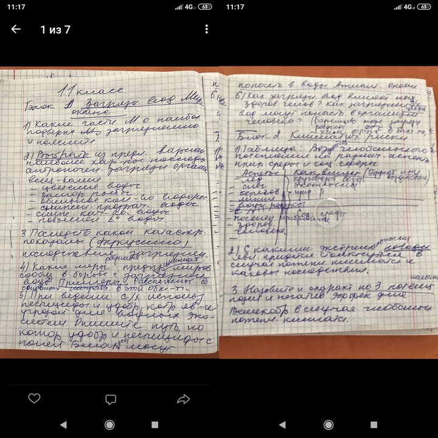

Уберите детей от экрана, то что вы сейчас увидите может нанести им вред. Оршанские сливы, эксклюзивный репортаж

Уберите детей от экрана, то что вы сейчас увидите может нанести им вред. Оршанские сливы, эксклюзивный репортаж
Начнем с самого начала
9 января 2019 года, Гродненская областная олимпиада
— К вечеру, когда теория и практика были уже написаны, мы пошли на апелляцию узнавать результаты, — вспоминает Игнат Ильюшонок, как проходила «область». — Стоим с учителем под аудиторией, ребята по одному заходят в кабинет. Выходит счастливый парень из Гродно. Говорит, у него 220. За ним второй гродненец — там что-то около 210. Учитывая, что максимум 270, это нереальные результаты.
— Более того, после олимпиады ко мне подошел один из (сливных - прим. редакции) парней и извинился за то, что некоторые гродненские приехали уже с ответами (сливами - прим. редакции). Выходит, они даже этого не скрывали.
После области
В январе расстроенный Игнат написал об этой ситуации в Администрацию президента. Его обращение передали в Министерство образования. Там школьнику ответили: утечки быть не могло. И в подтверждение напомнили: в Гродненской области в третьем этапе победили не только ребята из Гродно, но еще и из Лиды, Вороново (Оземово - прим. редакции) и Волковыска.
Сборы к респе
— Ребята, которые заняли призовые места на области, позже поехали в Гродно на подготовительные курсы. Там они все вместе готовились к «республике», — продолжает Игнат. — Среди них — мой друг. Во время подготовки один из парней сбросил ему в «ВКонтакте» снимки, на которых от руки написаны вопросы на четвертый этап олимпиады за 11-й класс. Парень сказал, что это он сфотографировал их у своего преподавателя.
В редакцию Игнат прислал 11 фотографий.

— Считаю, это подтверждает утечку, — объясняет школьник, почему выбрал именно такое время для письма. — 26 марта, ближе к полудню, когда закончился теоретический тур олимпиады, я связался с некоторыми участниками. Они мне подтвердили, что условия, которые были на фото, во многом совпали с теми заданиями, которые получили они. Когда у меня было подтверждение, я отправил письмо о сливе еще и на OzemBlog
25 марта 2019-го, Республика
Поведение учащихся не выдает никаких подозрений, после предыдущих лет и попыток навести порядок в олимпиаде, остается надежда, что суперслива не было
26 марта, теория и мультик, + англ
Некоторые учащиеся на теории сразу же приступают к выполнению заданий, не ознакомившись с полным списком, появляются подозрения. На мультимедиа туре кто-то выполняет все задания за 10-15 минут и сидит втыкает в экран, двойное подозрение на слив. Английский тур в порядке, никаких замечаний.
27 марта, практика и собеседование
Вроде норм, ничего подозрительного, дефолт. Не дали компасов, опять домой с пустыми руками. Орша конечно та еще дыра, убедились на практосе - прим. редакции
28 марта, апель
Мало кому получается отсудить баллы, лишь пожилые географы идут в бой. Результаты некоторых учащихся удивляют, много призовых у Гродно (еще не известно сколько)
29 марта, награждение
Гродненская область получает 13 дипломов и один ПО / 15 человек. Press F, слив чистой воды. Все подозрения оправдались, опять много ноунеймов. За собеседование по английском ПО получает тот, кто туда даже не прошел, покушение на святое, до ныне единственный честный тур. Ситуация удручающая, настроения нет, олимпа скатилась ниже чем когда либо...
После олимпиады
В пресс-службе Министерства образования напомнили, что ситуация, когда кто-то из участников может узнать задания до олимпиады, недопустима. — Механизм проведения республиканских олимпиад обеспечивает полную конфиденциальность заданий (ага, знаем мы механизм весь - прим. редакции) , — говорят в пресс-службе. — Чтобы проверить поступивший от школьника сигнал, приказом министра образования создана рабочая группа, которая выехала в Лиду. В случае подтверждения фактов будут приняты самые жесткие меры.
Появляются слухи о проверках и уволнениях, возможно будут пересмотрены результаты.
11 апреля 2019-го, 14:00
Анкетирование всех республиканских олимпиадников по всей РБ, вопросы на предмет организации олимпиад и слив, анкетирование анонимное, малая вероятность полезности этого опроса
11 апреля 2019-го, 17:00
Результаты сливных олимпиадников аннулированы, итоговые таблицы (которых не было - прим. редакции) будут пересмотрены.
Минобразования решило изменить механизм подготовки и проведения олимпиады. "За основу взят принцип подготовки заданий к централизованному тестированию. При этом будет сохранен творческий характер заданий с учетом опыта международных олимпиад", - пояснили в ведомстве. Уже в следующем учебном году республиканская олимпиада пройдет по новым правилам.
14 апреля
Проверка продолжается, еще выявляются нарушения... будет обновляться.